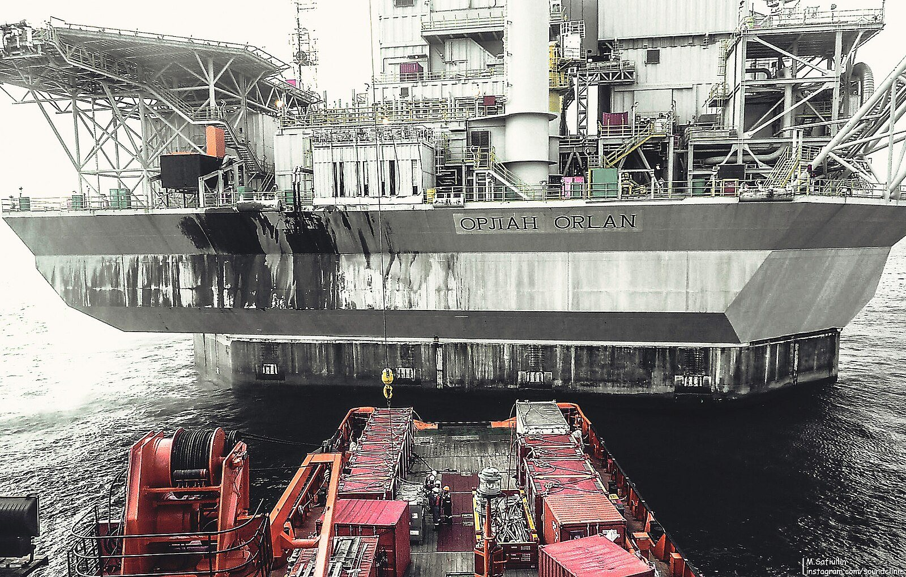

La mappa del rischio: Hormuz e Bab el-Mandeb
Per capire perché il mercato reagisce così violentemente alle notizie dal Medio Oriente, bisogna guardare la carta geografica. Il petrolio globale ha due grandi colli di bottiglia:
Lo Stretto di Hormuz, tra Iran e Oman, attraverso cui passa circa il 20% del petrolio mondiale — tra cui le forniture di Arabia Saudita, Emirati Arabi, Kuwait e Iraq. Dal febbraio 2026, il conflitto USA-Iran ha già ridotto significativamente il transito, con l'Iran che ha minacciato più volte di chiudere il passaggio in risposta alle sanzioni americane.
Lo Stretto di Bab el-Mandeb, all'ingresso del Mar Rosso controllato dallo Yemen. Gli Houthi — sostenuti dall'Iran — hanno dichiarato questa settimana di aver attaccato una grande raffineria saudita e continuano ad assediare la rotta navale, obbligando le petroliere a circumnavigare l'Africa, aumentando i tempi di consegna e i costi di trasporto.
| Commodity | Prezzo 8/10 | Variazione giornaliera |
|---|---|---|
| Brent (greggio europeo) | $103,00+ | +5,00%+ |
| WTI (greggio americano) | $91,36 | +3,49% |
| Oro (spot) | $4.140 | — |
| Bitcoin (BTC) | $81.469 | −2,5% circa |
💡 Impara: Brent vs WTI (i due prezzi del petrolio)
Esistono due principali benchmark (riferimento) del prezzo del petrolio mondiale. Il Brent, estratto nel Mare del Nord, è il riferimento per l'Europa e i mercati asiatici. Il WTI (West Texas Intermediate) è il riferimento per gli USA. Di norma il Brent vale qualche dollaro in più del WTI, perché è più leggero e dolce (meno zolfo). Quando entrambi salgono di più del 3% in una sola giornata, il segnale è chiaro: la tensione geopolitica è percepita come un rischio concreto per le forniture globali.
Cosa vogliono gli Houthi — e chi li finanzia
Gli Houthi sono un movimento armato che controlla la parte settentrionale dello Yemen. Sono sostenuti finanziariamente e militarmente dall'Iran, che fornisce missili, droni e addestramento. I loro attacchi alle rotte commerciali e alle infrastrutture petrolifere saudite hanno tre obiettivi: fare pressione sull'Arabia Saudita affinché smetta di combatterli, dimostrare la capacità di colpire il cuore del commercio globale, e alzare il prezzo del petrolio — che beneficia l'Iran, il cui bilancio dipende dal prezzo del greggio.
L'attacco alla raffineria saudita di giovedì, se confermato, sarebbe il più significativo degli ultimi mesi. L'Arabia Saudita processa circa il 12% del greggio mondiale nelle proprie raffinerie, e qualsiasi interruzione si ripercuote immediatamente sui prezzi globali.
Trump: "Non voglio un accordo con l'Iran"
Il presidente americano ha dichiarato giovedì di non voler perseguire un nuovo accordo diplomatico con l'Iran, aggiungendo che gli Stati Uniti stanno valutando una nuova presenza militare nella regione. La dichiarazione ha contribuito al rialzo del petrolio nella sessione americana, amplificando la spinta già proveniente dagli attacchi Houthi.
Il mercato interpreta questa postura come un segnale che la crisi non si risolverà a breve. Con la rotta di Hormuz già parzialmente compressa e quella di Bab el-Mandeb assediata, lo scenario di un petrolio stabilmente sopra i 100 dollari per il prossimo trimestre è diventato il caso base per molti analisti.
| Punto critico | % del petrolio mondiale | Stato attuale |
|---|---|---|
| Stretto di Hormuz | ~20% | Traffico ridotto (crisi USA-Iran) |
| Stretto di Bab el-Mandeb | ~10% | Assediato dagli Houthi |
| Raffinerie saudite | ~12% lavorazione | Attacco in corso (da verificare) |
💡 Impara: War Premium (premio di guerra)
Il war premium (premio di guerra) è la parte del prezzo del petrolio che non riflette la domanda e l'offerta reale, ma il rischio geopolitico. Quando c'è una crisi in Medio Oriente o una minaccia alle rotte di transito, gli investitori pagano di più il petrolio oggi per assicurarsi le forniture future — anche se fisicamente il greggio non è ancora scarso. In questa giornata, si stima che il war premium valga almeno 5-8 dollari al barile sul Brent.
Le conseguenze per l'inflazione e i tassi
Un petrolio stabilmente oltre i 100 dollari al barile ha conseguenze dirette sull'inflazione. Il prezzo dell'energia pesa direttamente sulla bolletta, sulla benzina e indirettamente su tutto ciò che viene trasportato — praticamente ogni prodotto che acquistiamo. Se il Brent resta sopra 100 dollari per settimane, l'IPC (Indice dei Prezzi al Consumo) europeo potrebbe risalire verso il 3-4% entro fine anno, rendendo quasi impossibile per la BCE tagliare i tassi nella riunione di dicembre.
Per le famiglie italiane con mutuo variabile, questo si traduce in rate mensili che non scenderanno prima di molti mesi. Per le aziende che importano materie prime o energia, i costi di produzione restano elevati.
💡 Impara: IPC (Indice dei Prezzi al Consumo)
L'IPC — o CPI (Consumer Price Index) in inglese — misura la variazione media dei prezzi di un paniere di beni e servizi acquistati dalle famiglie. È il principale indicatore dell'inflazione. Quando il petrolio sale, l'IPC tende ad aumentare perché l'energia è una componente diretta del paniere (benzina, bollette) e una componente indiretta di quasi tutto il resto (i trasporti alzano il prezzo di qualsiasi prodotto). Le banche centrali guardano l'IPC per decidere se alzare o tagliare i tassi.